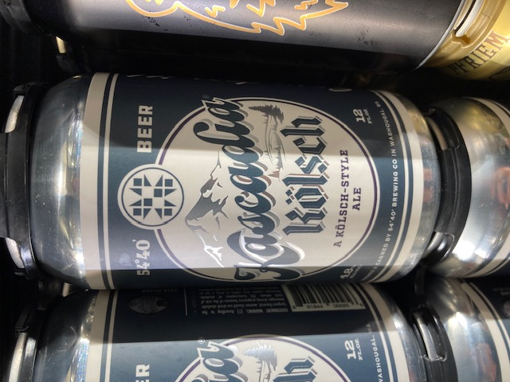

- Gaffel Kölsch – A crisp, clean beer that embodies the spirit of Cologne.
- Stone IPA – A bold, aggressively hoppy classic from California's craft beer scene.
- Saison Dupont – A refreshing Belgian farmhouse ale with a complex, spicy finish.
- Duvel – A strong golden ale that's deceptively smooth and famously potent.